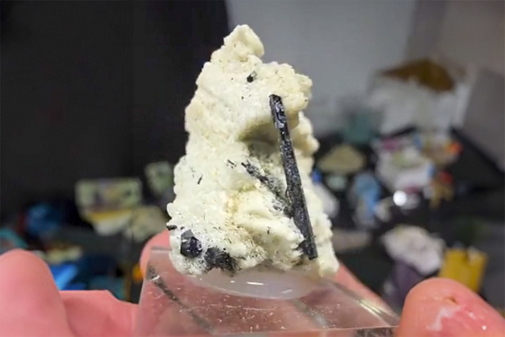

Schorl
"Long Schorl on Feldspar"
VIII-10633
Unassigned
Purchased 6/29/2026 from Bobby Holley Fine Minerals for $21.47
Core Collection • In Collection
Details
Storage Type: Drawer
Storage Location: C1D2 The Reserve Miniatures
Size class: Cabinet (0)
Dimensions: Unrecorded
Mass: Unrecorded
Luster: Unrecorded